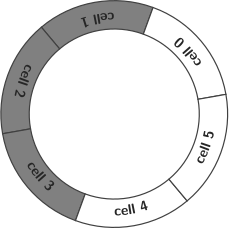

Communication latency (also called network delay and end-to-end delay) is the time it takes for that a chunk of data (encapsulated in an IP packet in the case of the Internet) to travel from one point of the network to another. This time is relevant for an intercom(municator) because the total latency \(t_u\) that users experiment can be approximated by \begin {equation} t_u = t_p + t_i, \label {eq:user_latency} \end {equation} where \(t_p\) is the propagation time (or propagation latency) of the link and \(t_i\) is the latency generated by the intercom.
Due to the current design of the Internet [4, 3] (where the available bandwidth is shared on demand by the network users) \(t_p\) is variable in time and cannot be controlled without using Quality of Service (QoS)1 [1]. In contrast, \(t_i\) is constant for a given intercom configuration/implementation.
We can consider that the Quality of Experience (QoE) provided by InterCom is inversely proportional to the jitter of the network (see Fig. 1-a). One solution (see Fig. 1-b) is the use of a random access buffer at the receiver side, where the chunks are stored for a time large enough to hide the jitter [2].
Dejitterizing buffers2 are typically implemented as a circular buffer structure (see Fig. 2). In an ideal situation (as depicted in the figure), the number of pending-to-be-played chunks available in the buffer is half of the number of slots in the buffer, and the chunks have arrived on time. In this example (Fig. 2), the receiver (where the chunks are buffered) waits for 3 chunks before starting playing the chunk number 0.3 Notice that the number of slots in the buffer, \(2N\), must double the number of chunks buffered during the buffering time proportional to \(N\), in order to hide a jitter of \(N\) chunks-time. Notice also that this technique also introduces a \(N\) chunk-time delay in the playback.
 |  |  |
| (a) | (b) | (c) |
For this new improved InterCom, users must provide a new parameter called “buffering time”. This value (typically expressed in milliseconds) should be large enough to hide the network jitter but small enough to keep the end-to-end (user) latency below some limit.
The following guidelines have been used to implement the buffered version of InterCom:
It has been taken into consideration that the critical part of InterCom (the method record_send_and_play()) is a method that runs as an interrup handler that is called each time a new chunk is available in the ADC. More precisely:
This is an overview of the implementation:
# Interruption handler def record_send_and_play(): chunk = record() # (1) packed_chunk = pack(chunk) # (2) send(packed_chunk) # (3) chunk = unbuffer_next_chunk() # (4) play(chunk) # (5) # Main (not a new) thread def receive_and_buffer(): packed_chunk = receive() # (1) chunk_number, chunk = unpack(packed_chunk) # (2) buffer(chunk_number, chunk) # (3)
Notice that Step (4) of the method record_send_and_play() extracts from the buffer an unpacked5 chunk. The chunks are buffered in Step (3) of the method receive_and_buffer(). Note also that Step (1) of receive_and_buffer() is a blocking method that should return with every new received chunk.
Determine, experimentally:
You can quantify the QoE using the following classification:
An example of a notebook related to this milestone can be found here.
[1] Peter L. Dordal. An Introduction to Computer Networks. 2020.
[2] James F. Kurose and Keith W. Ross. Computer Networking: A Top-Down Approach Featuring the Internet. Pearson, 2013.
[3] William Stallings. Data and Computer Communications. Pearson/Prentice Hall, 2007.
[4] Andrew S. Tanenbaum. Computer Networks. Prentice Hall, 2011.
1Something that is not available to normal network users.
2Usually implemented with random access buffers.
3Implementation tip: in a system where for each recorded chunk a chunk must be also played, a delay in the playback can be generated by sending zero-chunks to the DAC and then, after the delay, start sending the received chunk of audio, in the right order.
4Those chunks that have not been received on time or never have been received.
5Chunks will be compressed in a posterior milestone, and uncompressing is performed in this step.
6Different to the network in which you are using InterCom.